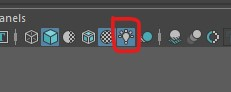
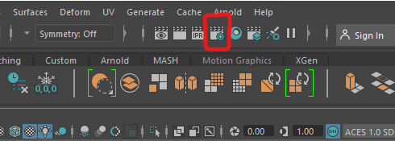

We will be using the Arnold Renderer in this worksheet.
If you are using the lab machines the Arnold render will already be installed and you can skip ahead to "Create a new scene"
If you are on your own machine, you will have been given the option to install it when you installed Maya. If you have it you should see an Arnold menu item.
If you cannot see it, you may need to turn on the Arnold render by going to:
Windows > Settings/Preferences > Plug-in manager
Then tick the boxes next to mtoa.mll
If you cannot get this work work please ask for help.


It is because you have no lights in your scene.
Close the Render View Window.
The light will be created at the origin, so move the light up above the model and rotate it so that the arrows point toward the model.
Only the rotation has an effect on directional lights, they are normally used to simulate a distant light source such as the Sun.
You can get an rough approximation of what the light will look like in the final render by turning on lights in the scene.
You can do this in the panel menu

If you cannot see the attributes, click on the attributes button in the top right of the screen.
Experiment with the changing the colour and intensity.

You should see that this renders the view from your camera.
Increase the intensity to get a nice glow inside the pumpkin. You can type a number into the box, start with 200 if you cannot see anything.


These lights have many more attributes.
You may want to add a polygon plane under your pumpkin so that you can see how the lights cast shadows on other objects.



You may find that your render quality is not very good. This can happen if you have low lighting or lots of complex objects in your scene.
You can adjust the render quality in the render settings panel.

Be careful, increasing the samples will improve your render quality but the render time will increase exponentially.
More information about these settings can be found here:
https://help.autodesk.com/view/ARNOL/ENU/?guid=arnold_user_guide_ac_render_settings_ac_samples_html